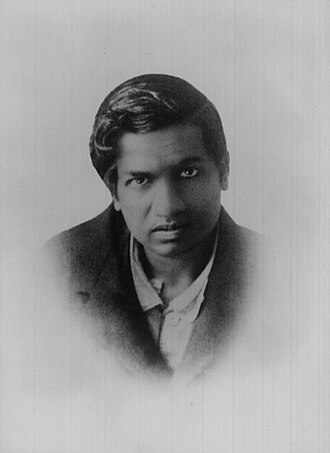

Shri Ramanujan:The Man who knew Infinity

Srinivasa Ramanujan (1887-1920), the man who reshaped twentieth-century mathematics with his various contributions in several mathematical domains, including mathematical analysis, infinite series, continued fractions, number theory, and game theory is recognized as one of history's greatest mathematicians. Leaving this world at the youthful age of 32, Ramanujan made significant contributions to mathematics that only a few others could match in their lifetime. Surprisingly, he never received any formal mathematics training. Most of his mathematical discoveries were based only on intuition and were ultimately proven correct. With its humble and sometimes difficult start, his life story is just as fascinating as his incredible work. Every year, Ramanujan’s birth anniversary on December 22 is observed as National Mathematics Day.
Born in Erode, Tamil Nadu, India, Ramanujan demonstrated an exceptional intuitive grasp of mathematics at a young age. Despite being a mathematical prodigy, Ramanujan's career did not begin well. He received a college scholarship in 1904, but he quickly lost it by failing in nonmathematical subjects. Another attempt at college in Madras (now Chennai) ended in failure when he failed his First Arts exam. It was around this time that he began his famous notebooks. He drifted through poverty until 1910 when he was interviewed by R. Ramachandra Rao, secretary of the Indian Mathematical Society. Rao was initially sceptical of Ramanujan, but he eventually recognised his abilities and supported him financially.
Srinivasa Ramanujan began developing his theories in mathematics and published his first paper in 1911. He was mentored at Cambridge by GH Hardy, a well-known British mathematician who encouraged him to publish his findings in a number of papers. In 1918, Ramanujan became the second Indian to be included as a Fellow of the Royal Society.
Ramanujan’s major contibution to Mathematics
Ramanujan's contribution extends to mathematical fields such as complex analysis, number theory, infinite series, and continued fractions.
Infinite Series for PI:
In 1914, Ramanujan found a formula for infinite series for pi, which forms the basis of many algorithms used today. Finding an accurate approximation of π (pi) has been one of the most important challenges in the history of mathematics.
Game Theory:
Ramanujan discovered a long list of new ideas for solving many challenging mathematical problems that have given great impetus to the development of game theory. His contribution to game theory is purely based on intuition and natural talent and is unmatched to this day.
Mock theta function:
He elaborated on the mock theta function, a concept in the field of modular forms of mathematics.
Ramanujan number:
1729 is known as the Ramanujan number which is the sum of the cubes of two numbers 10 and 9.
Circle Method:
Ramanujan, along with GH Hardy, invented the circle method which gave the first approximations of the partition of numbers beyond 200. This method contributed significantly to solving the notorious complex problems of the 20th century, such as Waring's conjecture and other additional questions.
Theta Function:
Theta function is a special function of several complex variables. German mathematician Carl Gustav Jacob Jacobi invented several closely related theta functions known as Jacobi theta functions. Theta function was studied by extensively Ramanujan who came up with the Ramanujan theta function, that generalizes the form of Jacobi theta functions and also captures general properties. Ramanujan theta function is used to determine the critical dimensions in Bosonic string theory, superstring theory, and M-theory.
Other notable contributions by Ramanujan include hypergeometric series, the Riemann series, the elliptic integrals, the theory of divergent series, and the functional equations of the zeta function.
Ramanujan‘s achievements were all about elegance, depth, and surprise beautifully intertwined. Unfortunately, Ramanujan contracted a fatal illness in England in 1918. He convalesced there for more than a year and returned to India in 1919. His condition then worsened, and he died on 26 April 1920. One might expect that a dying man would stop working and await his fate. However, Ramanujan spent his last year producing some of his most profound mathematics.
It has been more than a century, however, his mathematical discoveries are still alive and flourishing. "Ramanujan is important not just as a mathematician but because of what he tells us that the human mind can do”. "Someone with his ability is so rare and so precious that we can't afford to lose them. A genius can arise anywhere in the world. It is our good fortune that he was one of us. It is unfortunate that too little of Ramanujan’s life and work, esoteric though the latter is, seems to be known to most of us".
#############################################################################################